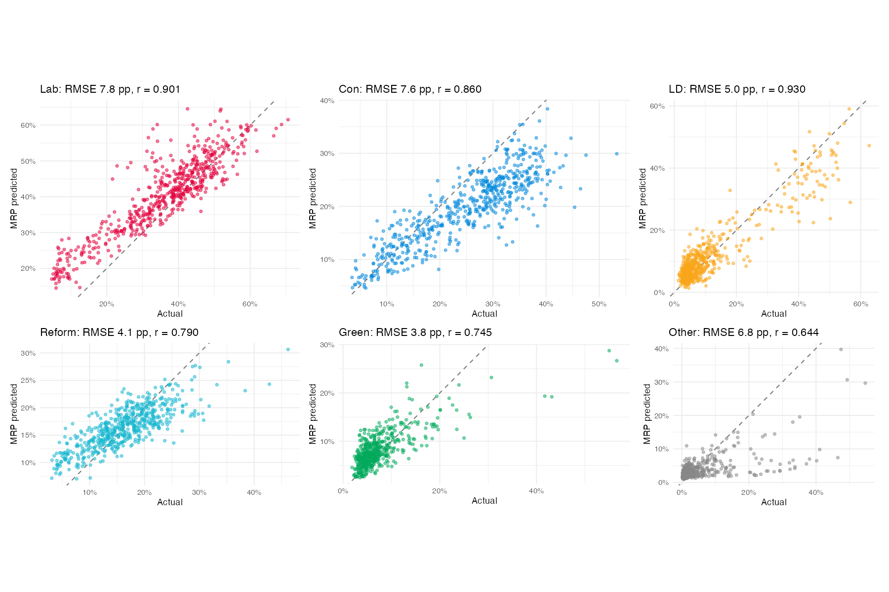
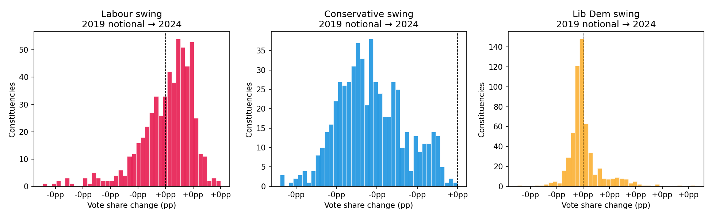

A decade of British political opinion — 30 waves of the British Election Study panel, covering five general elections and the Brexit referendum — run through Bayesian multilevel models to produce constituency-level estimates of vote share for every major party across all 575 England & Wales seats. This is an ongoing analysis project; what follows is an introduction to the methodology, the data, and what the models have found so far.
The multilevel structure is the key ingredient. A standard regression would either pool all constituencies together (losing local variation) or fit each seat separately (too few respondents per seat to get reliable estimates). Multilevel modelling sits between those extremes: constituency-level estimates are partially pooled towards a national baseline, with the degree of pooling determined by how much local information the data contain. Seats with more respondents get estimates closer to their raw data; sparse seats are pulled toward the national pattern. This is the shrinkage that makes MRP work.
The BES panel has tracked the same cohort of ~30,000 respondents across 30 waves from February 2014 to May 2025 — covering the 2015, 2017, 2019, and 2024 general elections, the 2016 Brexit referendum, and the intervening years of political turbulence. Each wave asks about current vote intention; post-election waves capture actual vote. The panel structure means we can track how individual voters move between parties over time, not just how the aggregate shifts.
Post-stratification uses joint census marginals: age band × education × tenure × sex, giving a 150-cell demographic frame for each constituency. This means the model's predictions are anchored to who actually lives in each seat, not just who happens to respond to the survey.
The project started with binary Labour vote share models in both brms (R, via Stan) and bambi (Python, via PyMC). These two implementations produce near-identical posterior means but differ in sampling efficiency — a useful sanity check on the methodology. Multiple formula versions were iterated (v2–v7) adding covariates progressively: constituency past vote share, Brexit Leave %, deprivation, sex, and various interaction terms.
The current model is a 7-party Dirichlet-multinomial MRP in brms, estimating vote shares simultaneously for Labour, Conservative, Liberal Democrat, Reform, Green, Other, and Abstain. Different predictors enter the model for different parties — Brexit Leave share is a strong predictor for Conservative, Reform, and Abstain but not Labour; education gradients are steepest for Conservative and Green.

These figures are broadly in line with published academic MRP benchmarks at this level of model complexity, and substantially better than uniform-swing national polls for individual seat prediction. Labour and Conservative errors are higher because their vote shares have the widest variance across seats.
A separate binary MRP estimates constituency-level Leave/Remain vote share from BES wave 8 (fielded shortly after the referendum). Validated against the Hanretty (2017) estimates: r = 0.986, RMSE 3.4 pp. One finding that stands out: social renters were the most strongly Leave demographic yet have remained among the most Labour-loyal — the "Brexitland paradox" that confounds simple Brexit-realignment narratives. Deindustrialised Labour-Leave seats are systematically underpredicted by demographics alone, suggesting persistent place-based identity effects.
The BES panel makes it possible to track the same voters over a decade. Among those who voted Leave in 2016, Reform UK's share of vote intention was ~5% in waves 20–21 (2022) and has risen to ~40% by wave 26+ (2024–25). The constituency-level correlation between Leave share (Hanretty estimates) and Reform vote share rises from near zero in early waves to r = 0.92 by the most recent wave — one of the sharpest political geographic realignments in recent British history. Among Leave voters, the shift to Reform is concentrated in older, lower-education, social-rent demographics; within that group it is almost universal.

The panel transition matrix shows where votes actually went between elections. Selected flows:
| Flow | Share of 2019 voters |
|---|---|
| Conservative → Reform | 26.2% |
| Labour → Green | 9.6% |
| Labour → Lib Dem | 8.0% |
The multi-election alluvial (2015→2017→2019→2024) tracks the same 3,908 respondents present across all four elections — illustrating the cumulative churn behind a landslide that looks decisive at the national level but masks substantial cross-cutting movement.
| Page | What it shows |
|---|---|
| Constituency profiles | Interactive hex map; click any seat for MRP vote share predictions vs actual GE results across all 30 BES waves |
| How MRP works | Visual explainer of the post-stratification mechanics with worked examples |
| Abstention analysis | Who doesn't vote? How has non-turnout changed across waves and demographics? |
| Party switching | Sankey flows and multi-election alluvial of voter transitions 2015–2024 |
| Brexit EDA | Brexit vote by demographic; Brexit → 2024 party; Leave% vs Reform share trajectory W1–W30 |
| Prospective vs retrospective | Does asking about past vote or current intention produce better MRP predictions? |
| Shrinkage EDA | How the multilevel pooling affects constituency estimates — which seats shrink most and why |